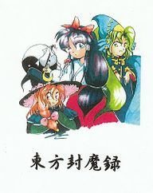

- Welcome to Touhou Wiki!
- Please register to edit. For assistance, check in with our Discord server or IRC channel.
Story of Eastern Wonderland
the Story of Eastern Wonderland | |
|---|---|
|
 | |
| Developer | |
| Publisher | |
| Released |
Full: August 15, 1997 (Comiket 52) |
| Genre |
Vertical Danmaku Shooting Game |
| Gameplay |
Single-Player Story Mode |
| Platforms |
PC-98 (NEC PC-9800 / EPSON PC-486/586) |
| Requirements |
|
Touhou
The resident shrine maiden Reimu Hakurei returns from a "training" session in the mountains only to find the Hakurei Shrine overrun by a legion of ghosts and youkai. Excited at the opportunity to test her fledgling abilities, she takes the powerful Yin-Yang Orbs and hurries off on the back of her turtle Genjii to seek out the source of the invasion.
Gameplay[edit]
The Story of Eastern Wonderland casts the player as the Shrine Maiden Reimu Hakurei and offers three distinct attack types to choose from: a wide-range type with weak attack power, a mid-range type with moderate attack power and auto-targeting capabilities, and a narrow-range type with high attack power but lowered movement speed. The bombs also exhibit unique behavior depending on the type chosen.
As the first danmaku shooting game in the Touhou Project, the Story of Eastern Wonderland introduces many features that are now hallmarks of the series as a whole: relatively small hit boxes, boss characters who are not much larger than the player character however are highly mobile, a power-up system, variable-worth point items, an unlockable Extra Stage, and a semi-complex scoring system. The game also marks the first appearance of Marisa Kirisame, who would become a major character in the series, appearing as often as Reimu Hakurei herself.
Concept[edit]
The game itself was designed to stand alongside Highly Responsive to Prayers at Comiket 52. ZUN, rather haughtily, states that it is supposed to be a danmaku game with so many bullets that not even DoDonPachi, a popular shooting game at the time, would compare - by having more bullets, but an even smaller hitbox. Much of the stage design was apparently influenced by Darius Gaiden, an entry in a series that ZUN usually cites as one of his main inspirations.
Before the game was released at Comiket 52, ZUN was already working on Phantasmagoria of Dim.Dream.
Story[edit]
The story involves Reimu's investigation of monsters that appeared suddenly at the Hakurei Shrine. This time around, she takes two Yin-Yang Orbs, and her turtle servant Genjii in order to fly. She encounters Rika with her Flower-Tank and Meira who want to fight Reimu for personal reasons. She then travels through the World of Fantasies, which is between Gensokyo and Makai, and defeats the Five Magic Stones in order to reach Reimaden, which is where she meets Marisa Kirisame and re-encounters Mima. Marisa appears to be the ghost's servant. Mima disappears after suffering a defeat by Reimu's hand, but the monsters and spirits around the shrine don't seem to have gone away.
During the extra stage, Rika attacks once more, this time with her new tank Evil Eye Σ. After defeating the engineer, Reimu returns to the shrine to find the monsters gone.
Music[edit]
The original game included fifteen tracks, in the format most often seen by later games in the series: a theme for each stage, a theme for each boss, a title screen theme, an ending theme, and a staff roll theme. All were included in the music room in the game, which included the names of the tracks as well, and the name of each track appears in the bottom right whenever it plays in-game; ZUN states that this was influenced by Metal Black, a 1991 horizontally-scrolling shmup by Taito.
This is the only PC-98 game to include two vastly different versions of it's soundtrack, a FM version and a MIDI version, which can be selected in the option menu. The MIDI version, not limited by the very low polyphony of the FM sound boards for the PC-98, includes additional voices, melodies and phrases in many songs. The MIDI soundtrack requires an external sound module for playback, and it was intended to be played on a Roland SC-88. Recordings of the MIDI versions made using a 100% compatible module can be found here.
In the music room of Mystic Square, ZUN includes three unused songs that didn't make it into the final version of the game - "Hakurei Shrine Grounds", "Sunfall" and "Demon-Sealing Finale". The fifteen main tracks and these three unused songs later appear in Akyu's Untouched Score vol.3. Additionally, three songs had different internal names than those used in-game (noted on the main music page linked above).
Press[edit]
the Story of Eastern Wonderland was released alongside Highly Responsive to Prayers at Comiket 52. Since the first game had been complete since sometime in 1995, it is unknown how long ZUN worked on this one for.
Akyu's Untouched Score vol.3 was released later at Comiket 71 at the end of 2006, which included all eighteen tracks.
On September 19, 2002, all the five PC-98 games have officially stopped being sold, a little after the Embodiment of Scarlet Devil was released.
Gallery[edit]
The game's title screen
External links[edit]
Official[edit]
- Team Shanghai Alice
- Amusement Makers (Former) Official Site
- Selection of PC-98 game music (PMD)
- PC-98 Touhou music arranged for the SC-88Pro (MIDI)
Unofficial[edit]
- ZUN's MIDI files played on a real SC-88Pro, including the MIDI version of the Story of Eastern Wonderland soundtrack and the arrangements from his site.
- Hoot Multisound Emulator
- Fixed music archive for hoot - Put it in hoot's /pc98 folder.
- Touhou Project PC-98 Complete English Patch Pack by xJeePx
References[edit]
- ↑ The game itself doesn't have a solid subtitle, except for the phrase The Story of "HUMA" in Eastern Wonderland. The subtitle "the Story of Eastern Wonderland" was later given to it on ZUN's archives site as well as Akyu's Untouched Score vol.3.